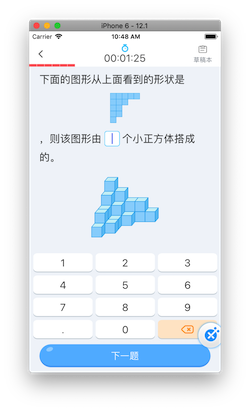
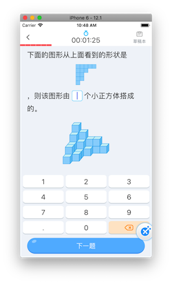
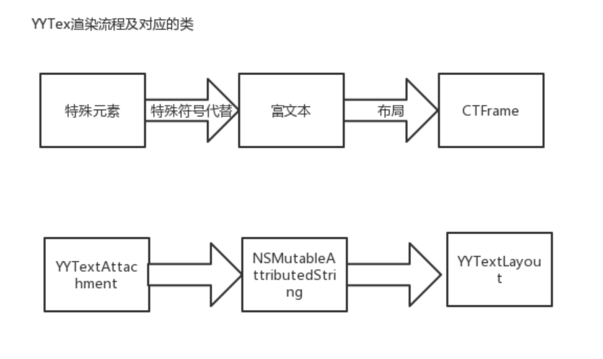

iOS 基于CoreText题型渲染引擎主题讨论
目录
前言
本次分享的主题是关于CoreText的相关应用实践，并非是纯分享CoreTextAPI的使用。CoreText如何使用，网上很多相关文章，官方也有相应的开发文档，在这里我只是做简单的铺垫。
本次分享的主要目的是将“文本排版”，“文本绘制”，“图片绘制”，“图文混排”等相关的知识点串联起来，形成体系。然后通过“题型渲染引擎”和“YYText”的相关实践，来系统化的思考未来开发中关于排版可能的解决方案。
一：排版的基础
1. UILabel，UITextField,UITextView,UIWebView的文本是如何排版并显示到屏幕上的？
我们平常使用最多的是UIKit里的UILabel,UITextField,UITextView,UIWebView,他们的文字排版是都基于CoreText这个核心库。CoreText是对富文本做排版，将排版后的数据，即字形和其位置，交给CoreGraphics进行绘制，绘制的结果是bitmap图,然后交由GPU渲染。
下面是iOS7之后的UIKit文本处理的架构图如下

【图片来自官方文档】Text Kit Framework Position
2. Text纯文本的排版原理
排版的核心是把字符转换成字形，把字形排成行，把行排成段落。
字符与字形概念
- 字符：每一个字符用唯一的Unicode表示
- 字形：一个字符可以有很多个字形，也就是字的形状，包括，斜体，加粗都是不同的字形
- 字体：字符与字形的颜射，一个字符可以有多种字形
- 装饰：下划线，删除线，与字形没有关系，系统只是额外的加了一条线
- 段落：段落与字形也没有关系，只是改变字形的位置，包括缩进，对齐，方向
我们平时设置
[UIFont fontWithSystem:]方法时，就是在字体里找所应的字符的形状。字形描述集(Glyphs Metris)
那么字形本身用哪些属性来描述呢？如下面两幅图

【图片来自官方文档】Text Programming Guide for iOS

【图片来自官方文档】Text Programming Guide for iOS
字形描述解释
BaseLine：一条假想的参照线，以此为基础进行字形的布局
Origin：基线上最左侧的点。
Ascent：上行高度，字形的最高到baseline的高度
Descent：下行高度，字形的最低到baseline的高度
leading：行间距
Bounding Box：一个假想的边框，尽可能地容纳整个字形
通过下面的一张图可以检验是否理解了字形描述的属性

红色高度即为当前行高，绿线为baseline，绿色到红框上部分为当前行的最大Ascent，绿线到黄线为当前行的最大Desent，而黄框的高即为行间距。CoreTex对字形的处理过程
布局引擎要用字体把字符转换成字形，然后通过字体规格信息微调大小，用段落样式把字形放到它所该在的位置。(暂时假设，字形是图片，那么，图片怎么显示到屏幕上的呢？)
3. 图片是怎样从加载到显示的？
字形我们假设是图片，那么图片又是如何从本地加载到显示到屏幕上的呢？
在这里我只是做个简短的描述，想要更为细致的研究，请参考
谈谈 iOS 中图片的解压缩
iOS 视图、动画渲染机制探究
图片显示过程如下：
- 从磁盘加载一张图片，
UIImage *image = [UIImage imageWithName:]这个时候图片并没有解压缩，UIImage里存的是未解压缩的NSData。 - 然后将生成UIImage赋值给UIImageView
- 接着一个隐士的 CATranscation，捕获UIImageView图层树的变化（Transactions是CoreAnimation的用于将多个layer tree操作批量化为渲染树的原子更新的机制）
- 在主线程的下一个runloop到来时，Core Animation 框架准备要渲染的 layer 的各种属性数据，以及要做的动画的参数，准备传递給 render server。同时在这个阶段也会解压缩要渲染的 image。
- CoreAnimation打包layer的信息以及需要做的动画的参数，通过IPC交给renderServer(动画和视图的渲染其实是在另外一个进程renderServer里进行，renderServer与GPU打交道）
4. 怎么实现图文混排呢？
我们知道了文本的排版，知道了图片的渲染，那么如何实现图文混合排版呢？在开始这个问题前，我们先想想目前有哪些已经实现了图文混排的控件。
UIWebView
UIWebView的可以实现图片，文本的混合排版。整个的实现思路我猜测，是解析HTML文件，转换成富文本，然后用CoreText进行排版，然后将排版的结果绘制成位图图片，最后将图片放到视图CALayer的content上，由CoreAnimation交个RenderServer进行渲染。当然我说的这个流程是他的渲染一个简化的流程，苹果的实现还会对JS，网络等做处理，这就是一个比较大的话题了，不过也是一个非常有趣的主题。虽然UIWebView就能满足我们的需求，当考虑到H5加载速度慢，占内存，交换缓慢，绘制在主线程这些缺陷，影响用户体验。UITextView
UITextView的实现，也是基于TextKit实现，TextKit是对CoreText的一个封装。其实我们自己也可以通过CoreText来实现我们自己的TextView。YYText就是一个典范，我们在最后会谈谈YYText的源码。
现在我们知道了文字如何排版，图片如何显示，也知道了UIWebView,UITextView等的文本，图文混排都是基于CoreText的。那么我们怎么去实现文，图，输入框，其他自定义元素的混合排版呢？
下面我们看看CoreText的细节，看能不能从中找到实现的关键手段。
二：CoreText实现图文细节
1. CoreText的API
主要类介绍
CTFramesetter：排版器
CTFrame：排版结果，我们操作绝大部分都是对里面的line,run，delegate做操作
CTLine：CTFrame里的代表一行
CTRun：CTFrame里带表相同属性的片段
CTRunDelegate：字符代理，供设置字形的一些属性。（哈哈，这里是不是跟我们前面一开始聊排版的字形相联系起来了，对的，这个代理就是供设置哪些字形的属性，当然前提是要那个属性可以被设置，查看好像只有Ascent,Descent,width提供代理callBack）
CoreText关键元素结构图如下

【图片来自官方文档】Core Text Programming Guide
排版流程图如下

总结下：CoreText整个的输入是富文本，输出是CTFrame。所以在将文本进行排版的前提是将排版的元素转换成富文本，特殊元素用特殊字符代替，计算好位置后在特殊元素放在特殊字符的位置就可以了,CTFrame绘制到指定的图片尚上下文（可以是在主线程，也可以是在子线程绘制）。
生成对指定富文本的排版器CTFramesetter
CTFramesetterRef setter = CTFramesetterCreateWithAttributedString((CFAttributedStringRef) self.assembleAttributesString);生成排版结果CTFrame
在指定的路径范围里对指定的字符串的范围利用排版器setter进行排版，生成排版结果
CTFrameCTFrameRef frame = CTFramesetterCreateFrame(setter, CFRangeMake(0, self.assembleAttributesString.length), path, NULL);CTFrame绘制到指定的图片上下文
CGContextRef context = UIGraphicsGetCurrentContext();//取得当前的上下文 CGContextSetTextMatrix(context, CGAffineTransformIdentity);//去掉文本锯齿 CGContextTranslateCTM(context, 0, self.bounds.size.height);//转换坐标系 CGContextScaleCTM(context, 1, -1); CTFrameDraw(self.richTextData.frameRef, context);
以下是部分核心代码
//CoreRichTextData.m
- (instancetype)initWithSentenceArray:(NSArray *)sentenceArray {
if(self = [super init]){
_sentenceArray = sentenceArray;
_assembleAttributesString = [[NSMutableAttributedString alloc]init];
[self arrangementAssembleAttributesString];
}
return self;
}
- (void)setTextBounds:(CGRect)textBounds {
_textBounds = textBounds;
[self calculateImagePosition];
}
- (void)calculateImagePosition {
//获取所有的列
NSArray *lines = (NSArray *)CTFrameGetLines(self.frameRef);
if (lines == 0) {
return;
}
CGPoint lineOrigins[lines.count];
CTFrameGetLineOrigins(self.frameRef, CFRangeMake(0, 0), lineOrigins);
for (int i = 0; i<lines.count; i++) {
CTLineRef line = (__bridge CTLineRef)lines[i];
//获取每一行的runs
NSArray *runs = (NSArray *)CTLineGetGlyphRuns(line);
for (int j = 0; j< runs.count; j++) {
CTRunRef run = (__bridge CTRunRef)runs[j];
//每一个run的属性,从run中获取先前保存的信息
NSDictionary *attributes = (NSDictionary *)CTRunGetAttributes(run);
if(!attributes){
continue;
}
//获取当前run的位置
NSDictionary *extraData = (NSDictionary *)[attributes valueForKey:kCoreExtraDataAttributeTypeKey];
if(extraData){
id<CoreItemPotocal> item = [extraData valueForKey:@"value"];//对象
if (item == nil) {
continue;
}
if ([item isKindOfClass:[CoreTextItem class]]) {
NSLog(@"这是普通文本");
}else if([item isKindOfClass:[CoreLinkItem class]]){//返回的坐标是uikit坐标（左上为起点）
NSLog(@"这是链接");
}else if([item isKindOfClass:[CoreImageItem class]]){//返回的坐标是CoreText(左下为起点)
NSLog(@"这是图片");
}
CGFloat ascent;
CGFloat desent;
CGFloat width = CTRunGetTypographicBounds(run, CFRangeMake(0, 0), &ascent, &desent, NULL);
CGFloat height = ascent + desent;
CGFloat xOffset = lineOrigins[i].x + CTLineGetOffsetForStringIndex(line, CTRunGetStringRange(run).location, NULL);
CGFloat yOffset = lineOrigins[i].y;
//coreText坐标
CGRect ctClickableFrame = CGRectMake(xOffset, yOffset, width, height);
//将CoreText坐标转换为UIKit坐标
CGRect uiKitClickableFrame = CGRectMake(xOffset, self.textBounds.size.height - yOffset - ascent, width, height);
[item.uiKitFrames addObject:[NSValue valueWithCGRect:uiKitClickableFrame]];
[item.runFrames addObject:[NSValue valueWithCGRect:ctClickableFrame]];
}
}
}
}
- (void)arrangementAssembleAttributesString {
for (int i = 0; i< self.sentenceArray.count; i++) {
id<CoreItemPotocal> item = self.sentenceArray[i];
if([item conformsToProtocol:@protocol(CoreItemPotocal)] && item.attributesStr!=nil){
[self.assembleAttributesString appendAttributedString:item.attributesStr];
}
}
}
- (CTFrameRef)frameRef {
//排版的路径范围
CGMutablePathRef path = CGPathCreateMutable();
CGPathAddEllipseInRect(path, &CGAffineTransformIdentity, self.textBounds);
//创建排版器，
CTFramesetterRef setter = CTFramesetterCreateWithAttributedString((CFAttributedStringRef) self.assembleAttributesString);
//在指定的路径里，排版哪些范围的字符
CTFrameRef frame = CTFramesetterCreateFrame(setter, CFRangeMake(0, self.assembleAttributesString.length), path, NULL);
return frame;
}
2. 需要解决的主要问题
下面我只是将要面临的问题的思路简单说明下，想一探究竟的可以参考我的一个在GitHub上的CoreText开源示例的CoreTextDemo，或者参考唐巧老师的基于CoreText的排版引擎代码里有对这些问题的实现。
坐标转换
UIKit的原点与CoreText的坐标原点不一样。需要做坐标转换。特殊元素（图片，自定义的view等）
图片主要是在指定的位置正确显示，用一个空白符，指定其代理方法的callBack设置空白符的大小。遍历CTFrame找到这个空白符，将其相对应的图片绘制在这个空白位置。CGContextDrawImage(context, frame, imageItem.image.CGImage);自适应高度
要能够实现自适应高度，像使用基本的UILable一样，能通过自动布局或者sizeToFit计算出高度。做的完善点还可以支持自动布局
三：基于CoreText的题型渲染引擎实践
1. 效果展示
 

2. 整体架构
UML结构图
题型渲染引擎的架构图如下，将要排版题目的相关数据放在TemplateRenderModel(主要承载要绘制的题目内容，编辑与非编辑状态，不同场景下的样式区分)里。TemplateRenderEngin会对TemplateRender进行解析成

- 渲染流程图

TemplateRenderModel
TemplateRenderModel里的question
{"type":"para_begin","style":"math_picture"}##{"type":"img","src":"https:// tikuqiniu.knowbox.cn/Fuh17in1YIvYokZpB4k3Wrvxdz4U","size":"big_image","id":1} ##{"type":"para_end"}##{"type":"para_begin","style":"math_text"} ##{"type":"blank","class":"fillin","size":"express","id":1}#- #{"type":"blank","class":"fillin","size":"express","id":2}#＝ #{"type":"blank","class":"fillin","size":"express","id":3}##{"type":"para_end"}#解释question字符串（不需要纠结为什么这么定义，只需要明白定义了些什么）
type:定义是什么类型的元素，段落，blank,img,audio等
style:定义段落样式,本地有样式plist文件的映射
src:像图片，audio等带有媒体资源的源
size:图片大小
id:方便在同一个上下文里区分相同类型的不同元素
class:规定元素所属的类对Html了解的同学会觉得非常像Html标记里的定义，这算是一种模仿定义吧。
TemplateRenderModel里的renderMode
typedef NS_ENUM(NSUInteger, TemplateRenderMode) { kTemplateRenderModeEdit, kTemplateRenderModePreview, kTemplateRenderModeOptionPreview,//预览选项 kTemplateRenderModeOptionEdit, //答题选项 kTemplateRenderModeEditUserAnswer, //编辑模式下填充用户答案 };解释renderMode,渲染模式，题目既可以是可编辑的，也可以是预览或者用户填充完答案的。他们的显示内容是有差别的。
字符串转富文本（数据解析过程）
//1. 解析question字符串为一个个句子，即模型化 NSArray<TextFlowParseSentenceItem *> *sentenceList = [TextFlowSentenceParser parseString:string error:&parseError]; //2. 将句子转换成段落, 即模型化 NSArray<TextFlowParagraphItem *> *textFlowParagraphs = [TextFlowParagraphParser paragraphsFromSentences:sentenceList rawString:string error:¶graphParseError]; //3.1 将句子转换成一个抽象的对象TemplateRenderEngineUnitItem 将模型化后的句子进行标准化，标准化成一个可以操作的元素。这个元素标准化成三类，一般文本，纯属性文本，特殊元素。这个特殊元素就是前面提到的用数据填充后的模板。有音频的模板，图片的，其他任何自定元素的模板。这些被填充过后的模板知道了其自身的大小。并将模板的代理设置为TemplateRenderEngin,方便对模板的操作提供交互回调。 //3.2 将整个段落转换成抽象的对象TemplateRenderEngineParagraphItem 将模型化后的句子进行标准化，标准化成一个段落元素。这个段落元素包括<TemplateRenderEngineUnitItem *>units,和样式。创建View
根据标准化的段落句子，将他们的模板所生成的view，添加到这个self.view上。TemplateRenderEngin的view就是渲染后的View。计算各元素即相应的view的位置
将self.paragraphs里的TemplateRenderEngineParagraphItem，TemplateRenderEngineUnitItem转换成特殊字符，这些特殊字符代表占位。并将转换成的富文本，进行离屏绘制，生成bitmap，记录位置。
将TemplateRenderEngineUnitItem的填充抽的模板的view进行重新设置位置。这块的内容就是利用到了上节所聊的CoreText的排版技术。
3. 可以借鉴的地方？可以优化的地方？
好的地方
- 数据,样式，模板的相分离的设计
- 离屏绘制，即单独生成一个图形生下文进行绘制
- 绘制后bitmap图片的缓存
待优化的地方
- 异步绘制优化性能？
- TemplateEngin里的数据解析应该与排版相分离。也就是引擎里实现分层并不是很清晰
四：YYText排版思路对比
1. YYText基于CoreText排版部分的思路

2. 我们可以借鉴的地方？
- 异步绘制
YYLabel提供异步绘制功能通过一个异步绘制层YYTextAsyncLayer，将绘制的任务在子线程操作。绘制完成后后回调给YYLabel，在将特色元素放在指定的位置。
以下是YYLabel里的异步绘制任务调用
- (YYTextAsyncLayerDisplayTask *)newAsyncDisplayTask {
// capture current context
BOOL contentsNeedFade = _state.contentsNeedFade;
NSAttributedString *text = _innerText;
YYTextContainer *container = _innerContainer;
YYTextVerticalAlignment verticalAlignment = _textVerticalAlignment;
YYTextDebugOption *debug = _debugOption;
NSMutableArray *attachmentViews = _attachmentViews;
NSMutableArray *attachmentLayers = _attachmentLayers;
BOOL layoutNeedUpdate = _state.layoutNeedUpdate;
BOOL fadeForAsync = _displaysAsynchronously && _fadeOnAsynchronouslyDisplay;
__block YYTextLayout *layout = (_state.showingHighlight && _highlightLayout) ? self._highlightLayout : self._innerLayout;
__block YYTextLayout *shrinkLayout = nil;
__block BOOL layoutUpdated = NO;
if (layoutNeedUpdate) {
text = text.copy;
container = container.copy;
}
// create display task
YYTextAsyncLayerDisplayTask *task = [YYTextAsyncLayerDisplayTask new];
task.willDisplay = ^(CALayer *layer) {
[layer removeAnimationForKey:@"contents"];
// If the attachment is not in new layout, or we don't know the new layout currently,
// the attachment should be removed.
for (UIView *view in attachmentViews) {
if (layoutNeedUpdate || ![layout.attachmentContentsSet containsObject:view]) {
if (view.superview == self) {
[view removeFromSuperview];
}
}
}
for (CALayer *layer in attachmentLayers) {
if (layoutNeedUpdate || ![layout.attachmentContentsSet containsObject:layer]) {
if (layer.superlayer == self.layer) {
[layer removeFromSuperlayer];
}
}
}
[attachmentViews removeAllObjects];
[attachmentLayers removeAllObjects];
};
task.display = ^(CGContextRef context, CGSize size, BOOL (^isCancelled)(void)) {
if (isCancelled()) return;
if (text.length == 0) return;
YYTextLayout *drawLayout = layout;
if (layoutNeedUpdate) {
layout = [YYTextLayout layoutWithContainer:container text:text];
shrinkLayout = [YYLabel _shrinkLayoutWithLayout:layout];
if (isCancelled()) return;
layoutUpdated = YES;
drawLayout = shrinkLayout ? shrinkLayout : layout;
}
CGSize boundingSize = drawLayout.textBoundingSize;
CGPoint point = CGPointZero;
if (verticalAlignment == YYTextVerticalAlignmentCenter) {
if (drawLayout.container.isVerticalForm) {
point.x = -(size.width - boundingSize.width) * 0.5;
} else {
point.y = (size.height - boundingSize.height) * 0.5;
}
} else if (verticalAlignment == YYTextVerticalAlignmentBottom) {
if (drawLayout.container.isVerticalForm) {
point.x = -(size.width - boundingSize.width);
} else {
point.y = (size.height - boundingSize.height);
}
}
point = YYTextCGPointPixelRound(point);
[drawLayout drawInContext:context size:size point:point view:nil layer:nil debug:debug cancel:isCancelled];
};
task.didDisplay = ^(CALayer *layer, BOOL finished) {
YYTextLayout *drawLayout = layout;
if (layoutUpdated && shrinkLayout) {
drawLayout = shrinkLayout;
}
if (!finished) {
// If the display task is cancelled, we should clear the attachments.
for (YYTextAttachment *a in drawLayout.attachments) {
if ([a.content isKindOfClass:[UIView class]]) {
if (((UIView *)a.content).superview == layer.delegate) {
[((UIView *)a.content) removeFromSuperview];
}
} else if ([a.content isKindOfClass:[CALayer class]]) {
if (((CALayer *)a.content).superlayer == layer) {
[((CALayer *)a.content) removeFromSuperlayer];
}
}
}
return;
}
[layer removeAnimationForKey:@"contents"];
__strong YYLabel *view = (YYLabel *)layer.delegate;
if (!view) return;
if (view->_state.layoutNeedUpdate && layoutUpdated) {
view->_innerLayout = layout;
view->_shrinkInnerLayout = shrinkLayout;
view->_state.layoutNeedUpdate = NO;
}
CGSize size = layer.bounds.size;
CGSize boundingSize = drawLayout.textBoundingSize;
CGPoint point = CGPointZero;
if (verticalAlignment == YYTextVerticalAlignmentCenter) {
if (drawLayout.container.isVerticalForm) {
point.x = -(size.width - boundingSize.width) * 0.5;
} else {
point.y = (size.height - boundingSize.height) * 0.5;
}
} else if (verticalAlignment == YYTextVerticalAlignmentBottom) {
if (drawLayout.container.isVerticalForm) {
point.x = -(size.width - boundingSize.width);
} else {
point.y = (size.height - boundingSize.height);
}
}
point = YYTextCGPointPixelRound(point);
[drawLayout drawInContext:nil size:size point:point view:view layer:layer debug:nil cancel:NULL];
for (YYTextAttachment *a in drawLayout.attachments) {
if ([a.content isKindOfClass:[UIView class]]) [attachmentViews addObject:a.content];
else if ([a.content isKindOfClass:[CALayer class]]) [attachmentLayers addObject:a.content];
}
if (contentsNeedFade) {
CATransition *transition = [CATransition animation];
transition.duration = kHighlightFadeDuration;
transition.timingFunction = [CAMediaTimingFunction functionWithName:kCAMediaTimingFunctionEaseOut];
transition.type = kCATransitionFade;
[layer addAnimation:transition forKey:@"contents"];
} else if (fadeForAsync) {
CATransition *transition = [CATransition animation];
transition.duration = kAsyncFadeDuration;
transition.timingFunction = [CAMediaTimingFunction functionWithName:kCAMediaTimingFunctionEaseOut];
transition.type = kCATransitionFade;
[layer addAnimation:transition forKey:@"contents"];
}
};
return task;
}
- 将排版后数据抽象成YYTextLayout 将排版结构信息包装，方便处理。
3. 疑问，为什么不用YYText直接实现题型渲染，能不能满足需求呢?
题型渲染引擎包括的内容有题型的解析，排版，绘制。YYText包括了排版，绘制，所以题型解析的工作是逃不开的。而YYText是并不是专门做排版的，而是掺杂了TextView,label的特性的库。在一些支持一些特殊的排版问题时，是否能很好的支持，对于项目方的我们是存在很大的不确定性的。排版的机制并不是很难，我们自己做排版，虽然麻烦了点，但能掌握主动权，适应未来的需求。
五: 总结与参考文档
本篇文章主要探讨的是，基于CoreText排版库的应用实践。总体的流程是将富文本在指定的路径或者范围进行排版。对于自定的view或者其他元素，可以预先设置占符号，给定大小，排版完成后将view放在制定的位置即可。对于优化方面，有图片渲染后的内存缓存，异步绘制等。深入了解了文字如何排版，文字如何显示，图片如何显示，相信你对于UI布局，渲染性能方面的理解会提高一个很高的层次。
参考文档
Text Programming Guide for iOS
Core Text Programming Guide
Quartz 2D Programming Guide
Core Animation Programming Guide
谈谈 iOS 中图片的解压缩
iOS 视图、动画渲染机制探究
设计模式系列（四）-- 行为型
具体的实现Demo请进入DesignPatterns iOS工程实现查看
13. 责任链模式
避免请求发送者与接收者耦合在一起，让多个对象都有可能接收请求，将这些
对象连接成一条链，并且沿着者条链传递请求，直到有对象处理它为止。
iOS里的事件传递。就是一种责任链模式。
使用场景
有多个对象可以处理一个请求，具体哪个对象处理该请求由运行时自动确定。
在不确定指定接收者的情况写，向多个对象中的一个提交一个请求。
14：命令模式(很重要)
将一个请求封装成一个对象，从而使您可以用不同的请求对客户进行参数化。
使用场景
需要对行为进行记录，撤销或者重做，事物等的处理时。凡是有命令的地方，都可以使用命令模式。命令模式实现了很容易对命令的扩展（即对扩展开放），添加一个命令就可以了，同过这些命令取修改接受者的状态，其实我们直接执行函数就可以修改接受者的状态，当我们需要添加一些行为的记录，撤销的等行为，为了将行为的实现者receiver与行为的请求者(既可以是receiver也可以是其他对象)实现松耦合。
15：解释器模式
16：迭代器模式
提供一种按顺序访问一个聚合对象中的各个元素。而又无需暴露该对象的内部表示。
迭代器的关键代码是实现hasNext,next。
迭代器简化并且统一了对于集合类型的访问方法。在新添加的集合类型里，无需修改原有代码，只需要实现针对这个心添加的集合的迭代器就可以了。所以对扩展时开放的。
17：中介者模式
中介者模式和我们日常生活中的中介者其实是一样的。房产中介。解决了买家与卖家之间错综复杂的关系。实现了。买家与中介联系，卖家与中介联系,当然这里协调的对象也可以是相同类型的比如都是"买家",我们把买家与卖家统一称为“同事”（这类在初看文章的时候不理解为什么都是”同事“，其是为了方便描述罢了。在实际的开发中，那你想协调哪两种或者多种对象之间的交互都是可以的）。在对象的世界里面，也是如此。
实际的例子
MVC里的模式，c就是中介者，m,v都是同事。c需要协调m与v的交互。那么从这里也可以看出。设计不当的时候很容易将c搞的比较复杂。
代码里的例子
同事之间有一定的关系。同事A修改的分值，同事B的分值同样会修改。同事C的值统一会修改。
那么就有个问题，我同事A修改了值，我还要通过A取修改B的值，B的值修改了，B还要去修改C的值。这样就是对象间非常复杂的操作关系。
引入中介这后，这个几个对象之间的关系就变成只有中介者之间交互。这样关系就轻松多了。
18：备忘录模式
保存一个对象的某个状态，以便在适当的时候恢复对象。
在不破话封装的前提下，捕获一个对象的内部状态，幷在该对象之外保存这个状态，这样可以
在以后将恢复到原先保存的状态。
实现代码的核心是搞一个备忘录的类。要保存状态的类可以实现协议方法，取出当前需要保存的
信息。和将保存的信息恢复为类的过程。整个是在需要备忘得对象实现的。
所以，备忘录其实，就时搞一个类专门实现“存”与"取"一个对象的状态，以备忘。
19：观察者模式
当一个对象的状态发生改变的时候，所有的依赖对象都将得到通知。
解决一对多的情况。
观察者模式，在iOS里到处都有。通知中心，Kvo,等.
20：状态模式(很重要,实际的开始中很常见)
对象的行为依赖于他的状态，并且可以根据它的状态的改变而改变相关的行为。
使用场景
当代码中包含有大量于状态有关的行为时。
21：策略模式
策略模式同状态模式一样，不同的是将策略进行隔离。当有新的策略时，只需要扩展新的策略就行了。
22：模板方法模式
23：访问者模式
设计模式系列（三）-- 结构型
具体的实现Demo请进入DesignPatterns iOS工程实现查看
6. 适配器模式
适配器模式将某个类的接口转换成客户端期望的另一个接口表示。目的是消除由于接口不匹配所造成的类的兼容性问题。分为3类，类适配器，对象的适配器
类适配器
所谓的类适配器，指的是适配器Adapter继承我们的被适配者Adaptee，并实现目标接口Target。对象适配器
所谓的对象适配器，就是适配器实现我们的接口，但是并不继承需要被适配的类。而是通过在构造函数中将需要被适配的类传递进来从而进行适配(也就是组合的形式)。
它们的特点(至于特点，可以从它们的实现方法取考虑)
类适配器只能适配一个类，而对象适配器可以将不同的待适配者适配到统一目标。
而类适配器由于是继承，可以置换待适配对象的一些方法。
7. 外观模式
外观模式让子系统更加易用，使用端不需要了解子系统的内部的实现。
也不需要跟众多子系统的内部的模块进行交互，只需要跟门面交互就可以了。外观角色好比一道屏障，对客户端屏蔽了子系统的具体实现。
8. 桥接模式
桥接模式的场景：
类似于绘制形状，有多个形状，每个形状的颜色还不一样。为每种形状都提供各种颜色的版本，会造成n*n个类。
这是可以采用桥接模式，将继承关系转换成关联关系，为每种形状都提供各种颜色的版本。
桥接模式的本质是将继承关系转换成关联的关系。从而降低了类与类之间的耦合度，减少了系统中的类的数量，也减少了代码量。
9. 装饰
有这样一个场景，购买咖啡时，可以要求在其中加入各种调料。例如
豆浆，摩卡，蒸奶，有时添加，有时不添加。这样就会导致类的爆炸，并且无法满足混合添加,多次添加的的情况。
关键的实现装饰类的实现
装饰类的设计，装饰类既有主类的属性，本类也是主类类型。这样可以递归的方式来获得最总被装饰了的对象。
10. 代理
代理不说了，开始做iOS时就是代理模式。
11. 享元
享元就是共享对象。既可以内存缓存对象，也可复用对象（通过一个唯一的标识）。
12. 组合模式
我的理解，组合的设计模式在这里有两层含义。
一层含义：对象包含对象的问题，通过组合的方式（在对象内部引用对象）来进行布局。
二层含义：引申到树形结构的对象包含对象。
设计模式系列（二）--创建型设计模式
接下来将进入设计模式里的创建型设计模式。这里将对设计模式的使用场景与优劣，以及UML图做描述。
具体的实现Demo请进入DesignPatterns iOS工程实现查看
0. 简单工厂（if type）
（通过传类型进行区分，对修改是开放的，所有不好）
简单工厂就是一个工厂，将类型传进去，在一个类里面生成不同的类型。
弊端：这个工厂会包括多个需要生产的产品的引用。而且对于修改是开放的，因为需要修改类里面的内容。对于扩展也是需要在同一个类里面做修改。
1. 工厂方法（一个产品线）
使用场景：
当需要创建多种分Type的对象时，特别是针对多种类型有共同的行为特征时。或者写出简单工厂时，思考是否可以用工厂方法。
好处：
工厂方法遵循开闭原则就是”对扩展开放，对修改关闭”，再说白点就是实现工厂方法以后要进行扩展时不需要修改原有代码（你看简单工厂里添加类型时时不是还要修改if语句），只需要增加一个工厂实现类和产品实现类就可以。
实现：
产品基类（协议），工厂基类(协议)。产品实现，工厂实现。客户端直接使用工厂生产相应的产品就可以了。
费曼工厂方法会针对每个产品都有一个工厂实现类。工厂实现类有一个相应工厂的一个实现，这个实现是生产产品的实现。我们可以将工厂方法理解成一个产品线。
2. 抽象工厂（多个产品线及真正的工厂）
使用场景
1.通过对象组合创建抽象产品
2.创建多个系列产品
3.必须修改父类的接口才能支持新的产品
费曼 所谓的抽象工厂，就是将工厂方法的产品线扩大到多个产品线 我们可以将抽象工厂理解成多条产品线（真正的工厂）,每一个工厂有其特殊的标识。
突然想到一个例子
”北京杂酱面“ 与 “重庆杂酱面”都是杂酱面，都是配料都是面条，汤，酱，但北京面馆（一个工厂），是北京面条，北京汤，北京酱，重庆面馆（一个工厂）是重庆面条，重庆汤，重庆酱，这个工厂是一个产品线。
3. 单例模式(整个应用程序只用一个对象)
使用场景
在一个应用程序中，当需要在多个地方共享数据时
注意点
注意多线程的使用下的情况。
在实际的使用中，单例模式也不能滥用。举个例子，单例有个isLogin，我判定isLogin为true进入一个操作，其他线程将isLogin改成false，那么在这个单例里执行的操作都将有问题。
因为数据被其他线程改变了。在实际的开发中，这种情况会是一个大坑。
4. 构建者(子部分算法的变化无常，当构成这个对象组成相对固定)
构建者模式使用多个简单的对象一步一步构建一个复杂的对象。
主要解决的问题，有时候面临着"一个复杂的对象"的创建工作，通常其子对象部分有着剧烈的变换，需要将他们组合在一起。
我的理解是，当创建一个对象，这个对象需要很多组合的对象（且这些组合的对象有一定固定算法，我需要将这些对象随意的组合成我需要的对象）时，用构建者模式。（区别与抽象工厂，抽象工厂创建后不是随意的组合，是工厂创建后就只能生产固定的产品了，抽象工厂的变换在外部，而构建者的变换在内部，哈哈，就是这个意思）
例如
构造电脑，电脑的组成由CPU,显示器，主板，这是相对固定的。但子部分，CPU有各种实现的算法。所以这种情况使用构建者最好。
5. 原型模式
原型模式
原型遵循copy或者clone的协议。执行copy或者clone就是按照原型创建一个对象。在iOS里理解成copy就行了。
设计模式系列（一）设计模式概要
在这里给大家推荐一本设计模式入门的书《HeadFirst 设计模式》，这是我真正理解设计模式的开始。当然对于设计模式的理解，需要一定的开发经验才能真正理解的。

本篇文章不是对设计模式的全解。而是我自己在iOS的实践中对设计模式的理解的一个一个梳理。我在DesignPatterns iOS工程实现里写出了相关的Demo
学习方法：抽象—》具体—》应用—》引申。重点在与理解设计模式的几大原则在设计模式里的体现。当你理解了几大原则在设计模式里的体现，也就理解了设计的精髓所在。在自己写出相关Demo后，然后自己默写出相关设计模式的UML图，分析每种设计模式的优劣是为解决什么问题而诞生。那么那你就真正理解了设计模式。
设计模式的六大原则
开闭原则（面向对向设计的首要目标:对扩展开放，对修改关闭）
对扩展开放，对修改关闭，也就是在进行扩展时，不要对先前的代码修改（因为如果对先前的代码进行修改的化，需要重新测试）。对扩展开放最好直接创建一个新类，其他的东西都不要更改。可以采用抽象的方式，将对象抽象出来，形成对这个"抽象化"处理。里氏替换原则（子类替换基类业务不受影响）
在软件中将一个基类对象替换成它的子类对象，程序不将不会出现任何差错。其实这是开闭原则的一个实现。也就是在程序中尽量使用基类类型来对对象进行定义，而运行时在确定其子类类型。这样有一种面向基类，面向协议编程，这样在有扩展进来时，更改的代码就会很少。依赖倒置原则(面向协议编程)
名字取的很高大上。实际就一句话，实现依赖抽象，抽象不依赖实现。也就是面向协议编程，不针对实现编程。接口隔离原则(接口分离)
使用多个专门的接口，而不使用单一的总接口。每个接口
应该承担一种相对独立的角色，将不同功能类型的接口进行分离迪米特法则（减少对象之间交互）
应该减少对象之间的交互，如果两个对象之间不必彼此直接通信，那么这两个对象就不应该发生任何直接的作用。合成复用原则（多用组合少用继承）
尽量使用合成与聚合，而不是使用继承。
这条在实际的开发中，的确很有感触。继承用的不好会导致维护的困难。
设计模式分类
创建型设计模式
结构型设计模式
行为型设计模式
一：创建型（5种）
1:单例模式
2:工厂方法(生成单一产品)
3:抽象工厂（生产系列产品）
4:建造模式（生产比较复杂的具有统一生产流程的产品，将生产流程固话）
5:原型设计模式(clone的实现)
二：结构型（7种）
6:适配器模式（将一个对象适配成需要的接口）
7:桥接模式
8:组合模式（类似于iOS里的view，对每一个组件具有相同的操作方法）
9:外观模式（子系统）
10:享元模式（聚合使用）
11:代理模式
12:装饰模式
三：行为型（11种）
13:责任链模式
14:命令模式
15:解释器模式（暂时不太明白）
16:迭代器模式
17:中介者模式
18:备忘录模式
19:观察者模式
20:状态模式
21:策略模式
22:模板方法模式
23:访问者模式(暂时不太明白)
其中，命令模式，状态模式，策略模式，都是同的思想，将命令封装，将状态封装，将策略封装。
Copyright © 2015 Powered by MWeb, Theme used GitHub CSS.